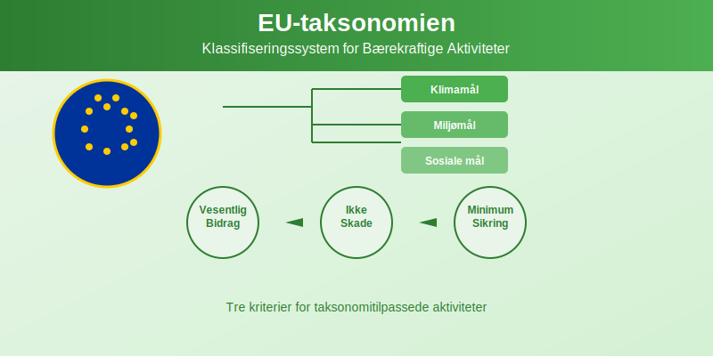
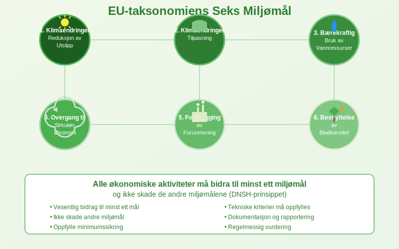
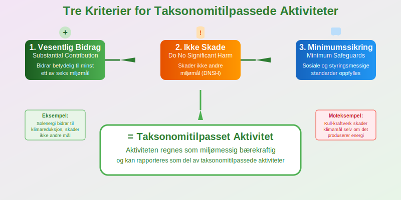
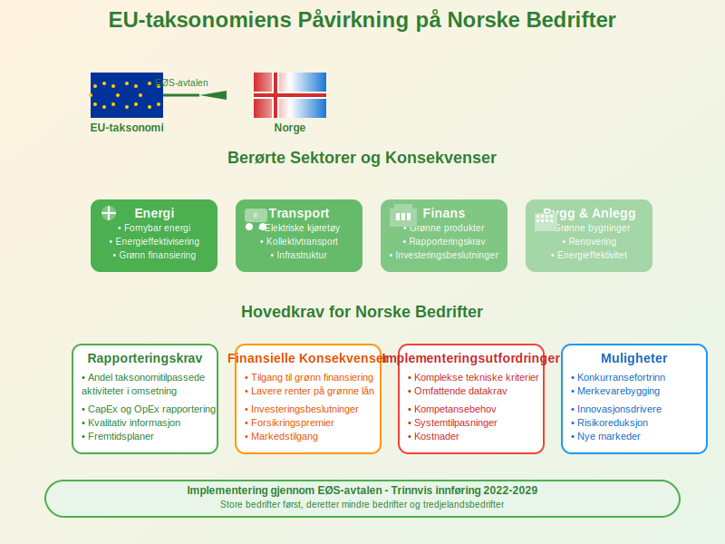
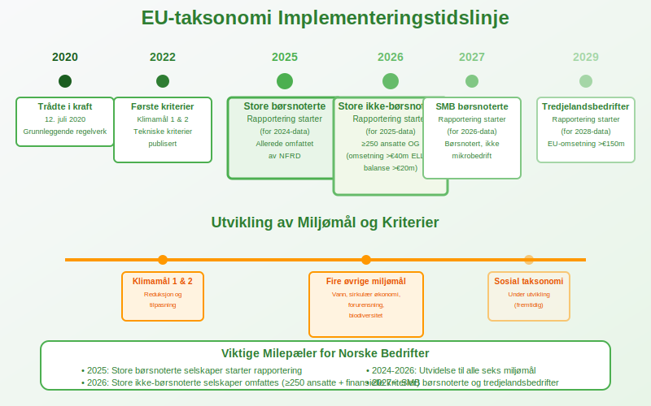
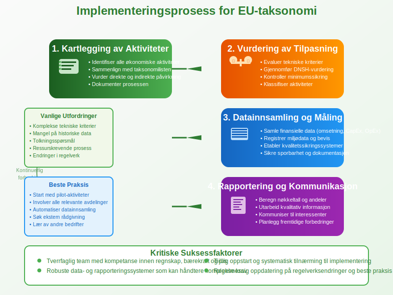
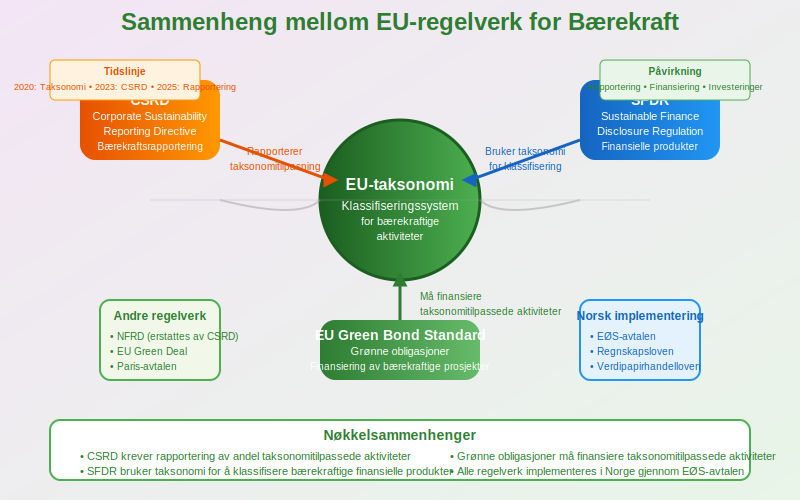

EU-taksonomien er EUs omfattende klassifiseringssystem som definerer hvilke økonomiske aktiviteter som regnes som miljømessig bærekraftige. Dette systemet påvirker rapportering, finansiering og investeringsbeslutninger for norske bedrifter og er nært knyttet til CSRD-rapportering.

Hva er EU-taksonomien?
EU-taksonomien (EU Taxonomy) er et vitenskapelig basert klassifiseringssystem som etablerer felles kriterier for å identifisere miljømessig bærekraftige økonomiske aktiviteter. Systemet trådte i kraft 12. juli 2020 og er en hjørnestein i EUs Green Deal og bærekraftige finansstrategi.
Hovedformål med EU-taksonomien
EU-taksonomien har flere sentrale mål:
- Standardisere definisjoner av bærekraftige aktiviteter
- Forhindre greenwashing gjennom objektive kriterier
- Omdirigere kapital til bærekraftige investeringer
- Støtte EUs klimamål om klimanøytralitet innen 2050
- Skape transparens i finansmarkedene
- Harmonisere rapportering på tvers av EU/EØS

De Seks Miljømålene
EU-taksonomien er bygget rundt seks miljømål som økonomiske aktiviteter må bidra til eller ikke skade:
1. Klimaendringer - Reduksjon av Utslipp
Klimareduksjon omfatter aktiviteter som:
- Fornybar energi: Sol, vind, vannkraft, geotermisk
- Energieffektivisering: Bygningsrenovering, LED-belysning
- Ren transport: Elektriske kjøretøy, kollektivtransport
- Industrielle prosesser: Karbonfangst, hydrogen
For å dokumentere bidrag til klimareduksjon må bedrifter måle og rapportere sine utslipp i henhold til GHG-protokollen.
2. Klimaendringer - Tilpasning
Klimatilpasning inkluderer:
- Flomvern: Diker, dreneringssystemer
- Tørkeresistente løsninger: Vannsparende teknologi
- Værbestandige infrastruktur: Forsterket bygg og anlegg
3. Bærekraftig Bruk av Vannressurser
Vannforvaltning omfatter:
- Vannrensing: Avløpsrenseanlegg
- Vannbesparelse: Effektive irrigasjonssystemer
- Vannkvalitet: Beskyttelse av vannkilder
4. Overgang til Sirkulær Økonomi
Sirkulær økonomi inkluderer:
- Avfallsreduksjon: Gjenbruk og resirkulering
- Produktdesign: Holdbare og reparerbare produkter
- Materialeffektivitet: Redusert ressursforbruk
5. Forebygging av Forurensning
Forurensningsforebygging omfatter:
- Luftkvalitet: Reduksjon av skadelige utslipp
- Kjemikaliekontroll: Tryggere alternativer
- Støyreduksjon: Stillere teknologi
6. Beskyttelse av Biodiversitet
Biodiversitetsbeskyttelse inkluderer:
- Naturrestaurering: Gjenoppbygging av økosystemer
- Bærekraftig skogbruk: Sertifisert tømmerproduksjon
- Havbeskyttelse: Bærekraftig fiskeri

Tre Kriterier for Bærekraftige Aktiviteter
For at en aktivitet skal regnes som taksonomitilpasset, må den oppfylle alle tre kriterier:
| Kriterium | Beskrivelse | Eksempel |
|---|---|---|
| Vesentlig bidrag | Bidrar betydelig til minst ett miljømål | Solenergi bidrar til klimareduksjon |
| Ikke skade | Skader ikke de andre miljømålene | Vannkraft må ikke skade biodiversitet |
| Minimumssikring | Oppfyller sosiale og styringsmessige standarder | Respekterer arbeidsrettigheter |
Vesentlig Bidrag (Substantial Contribution)
En aktivitet må bidra vesentlig til minst ett av de seks miljømålene gjennom:
- Direkte bidrag: Aktiviteten selv er miljøvennlig
- Muliggjørende aktivitet: Gjør andre aktiviteter mer bærekraftige
- Overgangsaktivitet: Støtter overgangen til lavkarbonøkonomi
Ikke Skade (Do No Significant Harm - DNSH)
DNSH-prinsippet sikrer at aktiviteter ikke skader andre miljømål:
- Kvantitative terskler: Spesifikke grenseverdier
- Kvalitative kriterier: Beste praksis og standarder
- Risikovurdering: Identifisering av potensielle skader
Minimumssikring (Minimum Safeguards)
Sosiale og styringsmessige krav inkluderer:
- OECD-retningslinjer for multinasjonale selskaper
- FN-konvensjoner om arbeidsrettigheter
- Korrupsjonsbekjempelse og etiske forretningspraksis
EU-taksonomiens Påvirkning på Norske Bedrifter
EU-taksonomien påvirker norske bedrifter gjennom EØS-avtalen og flere regelverk.

Rapporteringskrav
Bedrifter som omfattes av CSRD må rapportere:
- Andel taksonomitilpassede aktiviteter i omsetning
- Andel taksonomitilpassede investeringer (CapEx)
- Andel taksonomitilpassede driftskostnader (OpEx)
Finansielle Konsekvenser
EU-taksonomien påvirker finansiering gjennom:
- Grønne lån: Lavere renter for taksonomitilpassede aktiviteter
- Bærekraftige obligasjoner: Tilgang til grønn finansiering
- Investeringsbeslutninger: Økt fokus på taksonomitilpasning
- Forsikring: Potensielt lavere premier for bærekraftige aktiviteter
Sektorspesifikke Konsekvenser
| Sektor | Påvirkning | Muligheter |
|---|---|---|
| Energi | Høy - mange aktiviteter dekket | Fornybar energi, energieffektivisering |
| Transport | Høy - fokus på elektrifisering | Elektriske kjøretøy, kollektivtransport |
| Bygg og anlegg | Middels - energieffektive bygg | Grønne bygninger, renovering |
| Industri | Variabel - avhenger av prosesser | Sirkulær økonomi, ren teknologi |
| Finans | Høy - rapporterings- og investeringskrav | Grønne finansprodukter |
Implementering og Tidslinje
EU-taksonomien implementeres trinnvis med ulike krav over tid.

Gjeldende Regelverk (2022-2024)
- Klimamål 1 og 2: Kriterier for klimareduksjon og -tilpasning
- Rapporteringskrav: Store bedrifter må rapportere taksonomitilpasning
- Finansielle produkter: Krav til opplysninger om bærekraftighet
Kommende Utvidelser (2024-2026)
- Fire øvrige miljømål: Kriterier for vann, sirkulær økonomi, forurensning og biodiversitet
- Utvidede sektorer: Flere økonomiske aktiviteter inkluderes
- Skjerpede krav: Strengere rapporterings- og dokumentasjonskrav
Langsiktige Mål (2026+)
- Sosial taksonomi: Kriterier for sosiale mål
- Global harmonisering: Samarbeid med andre lands taksonomier
- Teknologiutvikling: Inkludering av nye grønne teknologier
Praktisk Implementering for Bedrifter
Norske bedrifter må ta flere praktiske skritt for å håndtere EU-taksonomien.
1. Kartlegging av Aktiviteter
Identifiser relevante aktiviteter:
- Gjennomgå forretningsmodell og identifiser alle økonomiske aktiviteter
- Sammenlign med taksonomilisten over dekket aktiviteter
- Vurder direkte og indirekte påvirkning på miljømålene
- Dokumenter prosessen for revisjonsformål
2. Vurdering av Taksonomitilpasning
Evaluer hver aktivitet mot kriteriene:
- Tekniske kriterier: Oppfyller aktiviteten de spesifikke kravene?
- DNSH-vurdering: Skader aktiviteten andre miljømål?
- Minimumssikring: Følges sosiale og styringsmessige standarder?
3. Datainnsamling og Måling
Etabler systemer for datainnsamling:
- Finansielle data: Omsetning, CapEx, OpEx per aktivitet
- Miljødata: Utslipp, energiforbruk, avfall
- Dokumentasjon: Beviser for oppfyllelse av kriterier
- Kvalitetssikring: Rutiner for datakvalitet og sporbarhet
4. Rapportering og Kommunikasjon
Forbered rapportering:
- Kvantitative nøkkeltall: Andeler av taksonomitilpassede aktiviteter
- Kvalitativ informasjon: Forklaring av vurderinger og metoder
- Fremtidsplaner: Strategi for økt taksonomitilpasning
- Ekstern kommunikasjon: Informasjon til investorer og interessenter

Utfordringer og Muligheter
EU-taksonomien skaper både utfordringer og muligheter for norske bedrifter.
Hovedutfordringer
- Kompleksitet: Detaljerte tekniske kriterier kan være vanskelige å forstå
- Datakrav: Omfattende datainnsamling og dokumentasjon
- Kostnader: Investering i nye systemer og kompetanse
- Usikkerhet: Utviklende regelverk og tolkningsspørsmål
- Konkurranseforhold: Ulike krav i forskjellige markeder
Strategiske Muligheter
- Konkurransefortrinn: Tidlig tilpasning gir markedsfordeler
- Finansieringsfordeler: Tilgang til grønn finansiering
- Innovasjon: Stimulerer utvikling av bærekraftige løsninger
- Merkevarebygging: Styrker omdømme og bærekraftsprofil
- Risikoreduksjon: Bedre håndtering av klimarelaterte risikoer
Sammenheng med Annet EU-Regelverk
EU-taksonomien er integrert med andre EU-regelverk for bærekraft.
CSRD og Bærekraftsrapportering
CSRD krever rapportering av:
- Taksonomitilpassede aktiviteter som del av bærekraftsrapporteringen
- Planer for økt tilpasning til taksonomien
- Risikoer og muligheter knyttet til taksonomikrav
SFDR og Finansielle Produkter
Sustainable Finance Disclosure Regulation (SFDR) krever:
- Produktklassifisering: Artikkel 6, 8 og 9-produkter
- Taksonomitilpasning: Rapportering av andel taksonomitilpassede investeringer
- Opplysningsplikt: Informasjon til investorer om bærekraftighet
EU Green Bond Standard
Grønne obligasjoner må:
- Finansiere taksonomitilpassede aktiviteter for å få EU-merking
- Rapportere bruk av midler mot taksonomikriterier
- Dokumentere miljøeffekt av finansierte prosjekter

Fremtidige Utviklinger
EU-taksonomien vil utvikle seg med nye krav og utvidelser.
Sosial Taksonomi
EU arbeider med en sosial taksonomi som vil dekke:
- Arbeidsrettigheter: Sikre og sunne arbeidsplasser
- Sosial inkludering: Tilgang til grunnleggende tjenester
- Menneskerettigheter: Respekt for grunnleggende rettigheter
Teknologiske Fremskritt
Nye teknologier vil påvirke taksonomien:
- Kunstig intelligens: Optimalisering av ressursbruk
- Blockchain: Sporbarhet i verdikjeder
- Digitale tvillinger: Bedre miljøovervåking
Global Harmonisering
Internasjonalt samarbeid om taksonomier:
- G20-initiativ: Felles prinsipper for bærekraftige finanser
- Bilaterale avtaler: Gjensidig anerkjennelse av taksonomier
- Standardisering: Harmonisering av kriterier og metoder
Sammenheng med Norsk Regnskap og Regnskapsstandarder
EU-taksonomien påvirker også regnskapsføringen i Norge og knytter seg til nasjonale standarder for regnskapsrapportering:
| Regelverk/Standard | Påvirkning på regnskap | Intern link |
|---|---|---|
| Regnskapsloven § 3‑3c | Krav om redegjørelse for samfunnsansvar | Regnskapsloven § 3‑3c |
| Norsk Regnskapsstandard (NRS) | Retningslinjer for bærekraftsrapportering | Norsk regnskapsstandard (NRS) |
| IFRS Sustainability Standards | For EU-børsnoterte selskaper, integrering av internasjonale bærekraftsstandarder | Hva er IFRS? |
| Vedtekter for AS | Krav til redegjørelse i årsberetning | Hva er vedtekter for aksjeselskap |
Konklusjon
EU-taksonomien representerer et paradigmeskifte i hvordan vi definerer og måler bærekraftige økonomiske aktiviteter. For norske bedrifter innebærer dette både utfordringer og muligheter som krever strategisk tilnærming og systematisk implementering.
Nøkkelpoeng for Norske Bedrifter
- Start tidlig: Kartlegg aktiviteter og vurder taksonomitilpasning
- Invester i kompetanse: Bygg intern kunnskap om taksonomikrav
- Etabler systemer: Utvikle robuste data- og rapporteringssystemer
- Se muligheter: Bruk taksonomien som verktøy for strategisk utvikling
- Følg utviklingen: Hold deg oppdatert på regelverksendringer
EU-taksonomien er ikke bare et rapporteringskrav, men et strategisk verktøy for å navigere overgangen til en bærekraftig økonomi. Bedrifter som mestrer taksonomien vil være bedre posisjonert for fremtidens marked og finansieringsmuligheter.
Sammen med CSRD-rapportering og andre bærekraftskrav, former EU-taksonomien fremtidens regnskaps- og rapporteringslandskap for norske bedrifter.